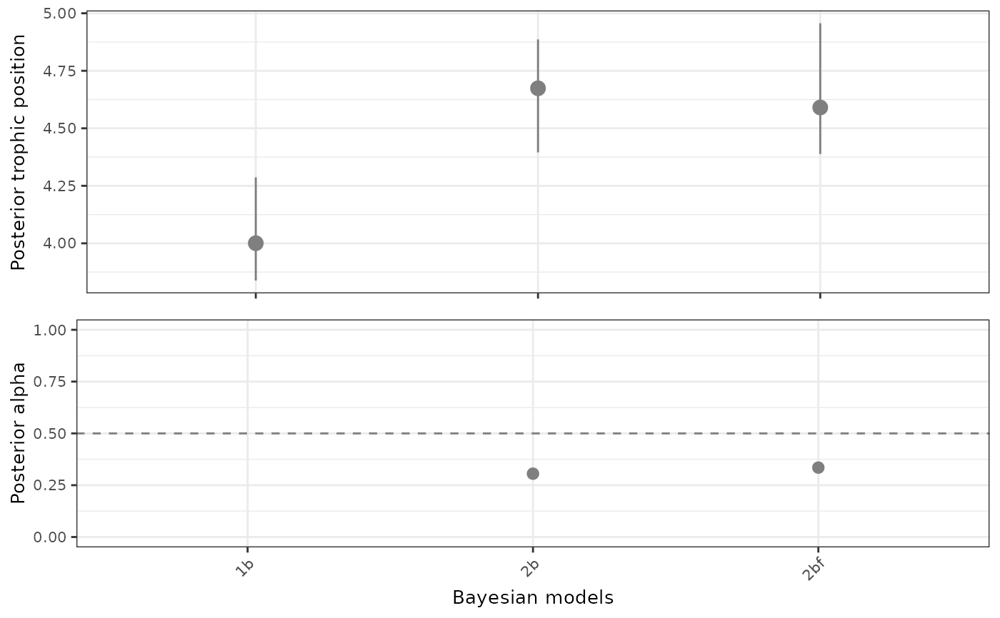

Plot credibility intervals and central tendency descriptor from posterior distributions of trophic position and/or alpha parameter
Source:R/credibilityIntervals.R
credibilityIntervals.RdThis function plots a data frame in ggplot2 format (variables in columns,
observations in rows), likely returned by the functions
multiModelTP and multiSpeciesTP. This is
especially useful when there are several species or communities to compare,
and a combined plot is preferred.
Usage
credibilityIntervals(
df,
x = "consumer",
plotAlpha = TRUE,
legend = NULL,
legendAlpha = NULL,
y1 = "mode",
y1min = "lower",
y1max = "upper",
y1lim = NULL,
y2 = "alpha.mode",
y2min = "alpha.lower",
y2max = "alpha.upper",
xlab = "Bayesian models",
ylab1 = "Posterior trophic position",
ylab2 = "Posterior alpha",
group_by = NULL,
scale_colour_manual = NULL,
labels = NULL,
plot = TRUE,
...
)Arguments
- df
data frame with at least 4 columns, a grouping variable, maximum, minimum and a central tendency descriptor (median, mode, etc.).
- x
string defining the grouping variable.
- plotAlpha
logical. If TRUE it expects that the data frame has at least 7 columns, another descriptor of central tendency, its maximum and minimum.
- legend
list, position of the legend if not NULL, e.g. c(0.8, 0.8).
- legendAlpha
list, position of the legend for the alpha plot, if not NULL, e.g. c(0.8, 0.8).
- y1
string of the column with the central tendency descriptor of trophic position. By default, is the mode.
- y1min
lower value plotted for trophic position. For the 95 credibility interval, this value would be 0.025 percentile.
- y1max
higher value plotted for trophic position. For the 95 credibility interval, this value would be 0.975 percentile.
- y1lim
vector of length 2, with limits of the y axis of trophic position.
- y2
string of the column with the central tendency descriptor of alpha.
- y2min
lower value plotted for alpha. For the 95 this value would be percentile 0.025.
- y2max
higher value plotted for alpha. For the 95 interval, this value would be percentile 0.0975.
- xlab
string of the label of the X axis.
- ylab1
string of the label of Y1 axis (trophic position).
- ylab2
string of the label of Y2 axis (alpha).
- group_by
grouping variable (factor) in case of using colours.
- scale_colour_manual
a list of colours (ggplot2 syntaxis) to use with group_by.
- labels
string, manual labels for the x axis.
- plot
logical, by default TRUE. In case of saving the output as a variable, the user can decide not to plot the output.
- ...
additional parameters passed to credibilityIntervals().
Value
a gtable (if alpha is plotted) with two ggplot2 objects or a ggplot2 object (if alpha is not plotted)
Examples
isotopeData <- generateTPData()
models <- multiModelTP(isotopeData, n.adapt = 200, n.iter = 200,
burnin = 200)
#> Compiling model graph
#> Resolving undeclared variables
#> Allocating nodes
#> Graph information:
#> Observed stochastic nodes: 106
#> Unobserved stochastic nodes: 31
#> Total graph size: 149
#>
#> Initializing model
#>
#> Compiling model graph
#> Resolving undeclared variables
#> Allocating nodes
#> Graph information:
#> Observed stochastic nodes: 206
#> Unobserved stochastic nodes: 14
#> Total graph size: 243
#>
#> Initializing model
#>
#> Compiling model graph
#> Resolving undeclared variables
#> Allocating nodes
#> Graph information:
#> Observed stochastic nodes: 313
#> Unobserved stochastic nodes: 66
#> Total graph size: 404
#>
#> Initializing model
#>
credibilityIntervals(models$gg, x = "model")
#> Warning: Removed 1 row containing missing values or values outside the scale range
#> (`geom_pointrange()`).
